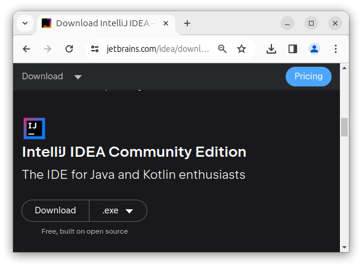

Первая программа на Kotlin в IntelliJ IDEA
Хотя мы можем компилировать приложения на Kotlin в консоли, однако, как правило, для разработки на KOtlin применяется такая программа как IntelliJ IDEA. Это среда разработки или IDE от компании JetBrains, которая значительно упрощает процесс разрабтки. Для ее установки IntelliJ IDEA загрузим установочный дистрибутив с официального сайта https://www.jetbrains.com/idea/download. По этому адресу можно найти пакеты для Windows, MacOS, Linux. Кроме того, сама среда доступна в двух версиях - Ultimate (платная с триальным бесплатным периодом) и Community (бесплатная). В данном случае выберем бесплатную версию Community.
Обратите внимание, что на сайте сначала идет платная Ultimate-версия и только потом бесплатная Community-версия. Эта среда доступна как для платформы Intel x64, так и для платформы ARM64. Для Windows и MacOS доступны установочные пакеты, для Linux доступны только архивы. Однако ряде ОС на Linux, например, на Ubuntu, для установки можно использовать пакетный менеджер snap и установить среду с помощью команды:
sudo snap install intellij-idea-community --classic
После установки запустим IntelliJ IDEA и создадим первый проект. Для этого на стартовом экране выберем New Project:
После этого откроется окно создания нового проекта:
В поле Name укажем имя проекта. Пусть проект будет называться HelloKotlin.
В поле Location можно указать путь к проекту, если не устраивает путь по умолчанию.
Поскольку мы будем работать с языком Kotlin, в поле Language выберем пункт Kotlin
Кроме того, в поле JDK можно указать путь к Java SDK, который будет использоваться в проекте. Как правило, это поле по умолчанию уже содержит путь к JDK, который установлен на локальном компьютере. Если это поле пусто, то его надо установить.
И также уберем отметку в поле Add sample code, чтобы не добавлять в проект файл с кодом по умолчанию.
После этого нажмем на кнопку Create. После этого среда создаст и откроет проект.

В левой части мы можем увидеть структуру проекта. Все файлы с исходным кодом помещаются в папку src. По умолчанию она пуста, и никаких файлов кода у нас в проекте пока нет. Поэтому добавим файл с исходным кодом. Для этого нажмем на папку src правой кнопкой мыши и в контекстном меню выберем пункт New -> Kotlin Class/File:
После этого нам откроется небольшое окошко, в которое надо ввести имя файла. Пусть файл будет называться app:
После нажатия на клавишу Enter в папку src будет добавлен новый файл с кодом Kotlin (в случае выше файл app.kt). А в центральной части откроется его содержимое - собственно исходный код. По умолчанию он пуст. Поэтому добавим в него пакой-нибудь примитивный код:
1 2 3 | fun main(){ println("Hello METANIT.COM")} |
Точкой входа в программу на Kotlin является функция main. Для определения функции применяется ключевое слово fun, после которого идет название функции - то есть main. Даннуя функция не принимает никаких параметров, поэтому после названия функции указываются пустые скобки.
Далее в фигурных скобках определяются собственно те действия, которые выполняет функция main. В данном случае внутри функции main выполняется другая функция - println(), которая выводит некоторое сообщение на консоль.
Запустим эту примитивную программу на выполнение. Для этого нажмем на значок Kotlin рядом с первой строкой кода или на название файла и выберем в появившемся меню пункт Run 'AppKt':
После этого будет выполнено построение проекта, и скомпилированная программа будет запущена в консоли в IntelliJ IDEA: